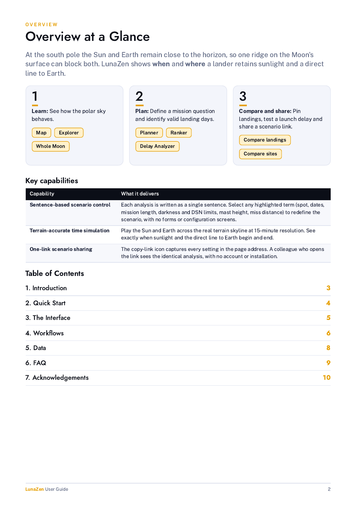
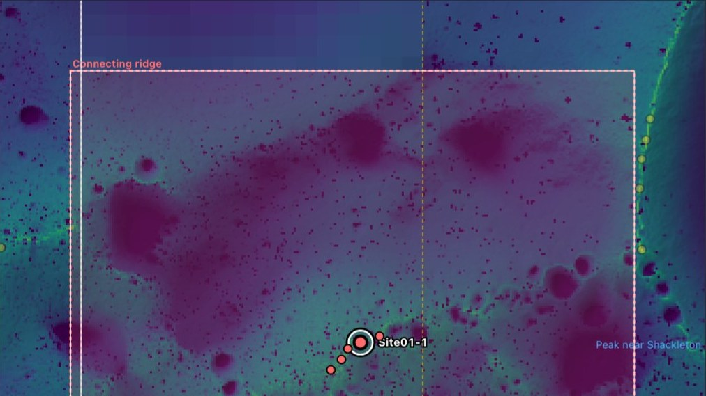

LunaZen User Guide
A manual for LunaZen: what each page does, a step-by-step worked example, and where the numbers come from.
- Includes a one-page overview, a quick start, the data sources, model limits and an FAQ.
Resources
The technical foundation behind LunaZen: operating guides, video walkthroughs, public NASA elevation and ephemeris datasets, benchmark checks, and model boundaries.

A manual for LunaZen: what each page does, a step-by-step worked example, and where the numbers come from.
| Validation check | Comparative source | Measured result | Threshold limit | Status |
|---|
| Category | Source dataset & methodology |
|---|---|
| Sun and Earth positions | JPL's DE440 ephemeris through NAIF SPICE, verified against JPL HorizonsNAIF SPICE[NASA/JPL] |
| Terrain | LRO's laser altimeter (LOLA), NASA's 5 m south-pole site maps and SLDEM2015Up to 5 m[LRO · Kaguya] |
| Deep Space Network | Antenna positions from NASA/JPL document 810-005[NASA/JPL] |
| Dates & coverage | Yearly figures on the Map precomputed for 2027, 2028 and 2029; any other date from 2024 to 2043 computed on requestJPL DE440 |
View all 27 evaluated sites →
Overview video · 3 minutes

A short walkthrough of the app: the map, the Explorer, the Plan tools and the checks behind every number.
Watch the overview →Dive into the orbital mechanics, solar and Earth geometry, and the mathematical modelling behind our polar site calculations.